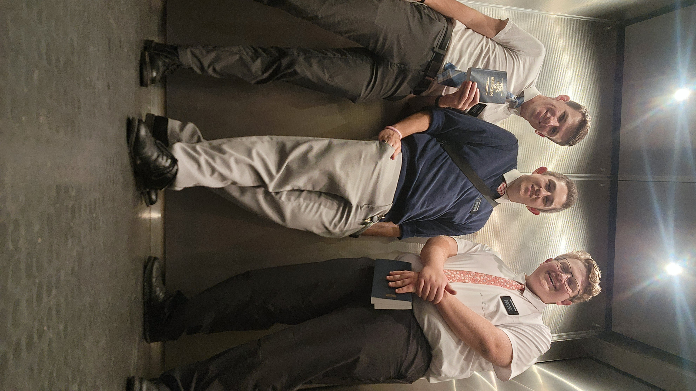

Ethan Blandamer Portal Page
This is my portal page. My name is Ethan Blandamer. I am from Birmingham, Alabama.
My major is Computer Science. This is my first semester at BYU-I.
I have been a member of The Church of Jesus Christ of Latter-Day Saints my whole life. My favorite quote is, "I am grateful to know that in spite of my imperfections, at least God is perfect —that at least He is, for example, able to love His enemies, because too often, due to the “natural man” and woman in us, you and I are sometimes that enemy." - Jeffrey R. Holland